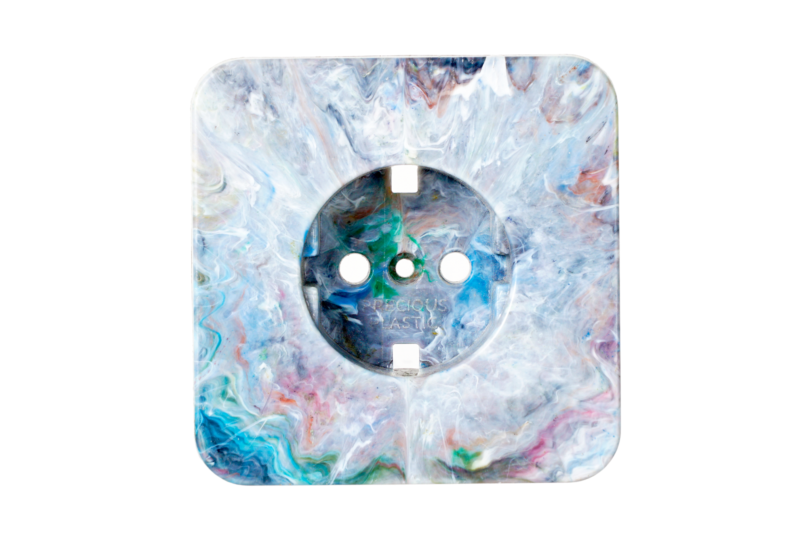
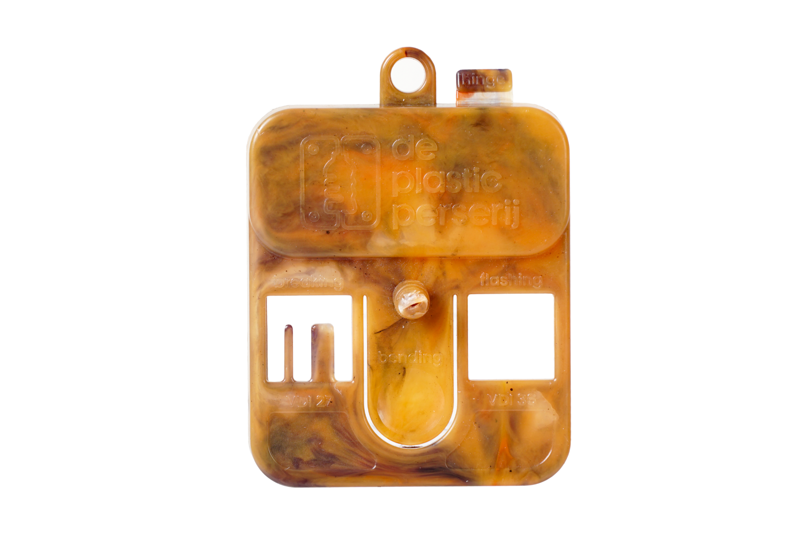
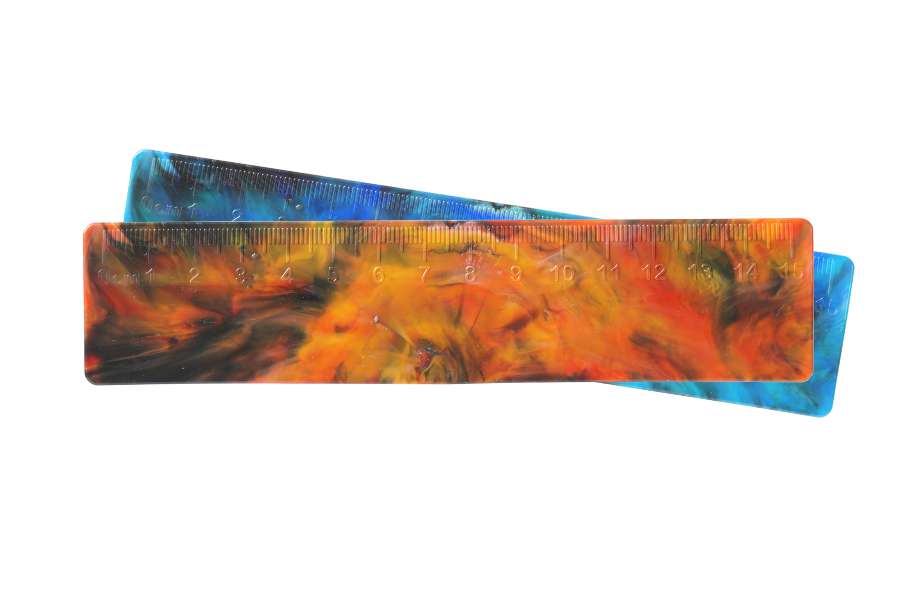
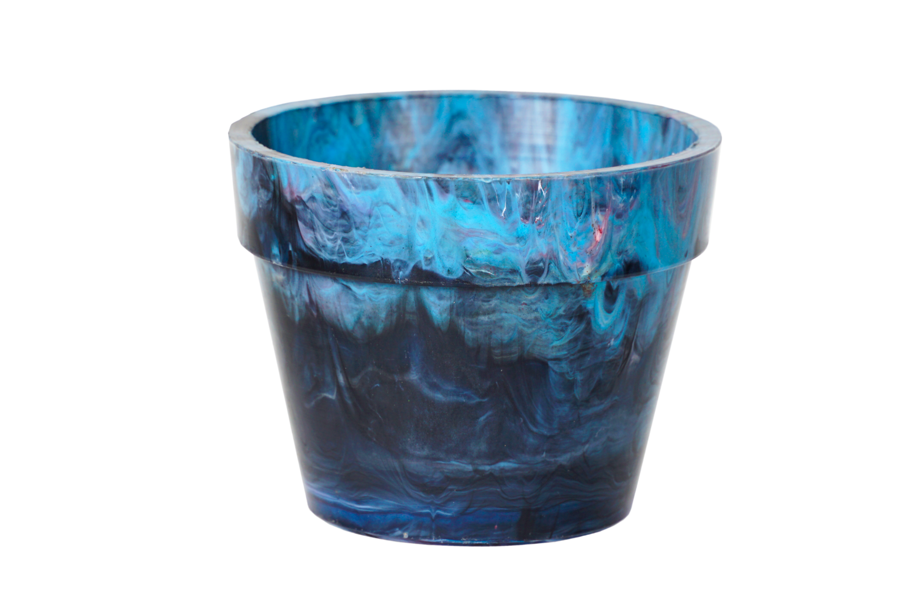

Stopcontactbehuizing
Kunststof behuizing voor standaard stopcontacten, spuitgegoten uit gerecycled plastic.
€ 25,00
16 op voorraad in geselecteerde kleur

Kunststof behuizing voor standaard stopcontacten, spuitgegoten uit gerecycled plastic.

Een tastbare kennismaking met het materiaal, de kleuren en het resultaat van het spuitgietproces.

Lineaal van gerecycled plastic, met een uniek gemarmerd kleurpatroon.

Plantenpotje van gerecycled plastic. Ieder exemplaar is net even anders.
Wil je een eigen product laten maken, een bestaande vorm aanpassen of een kleine serie voor je organisatie produceren? Bekijk dan de mogelijkheden voor productie.
Bekijk productie →